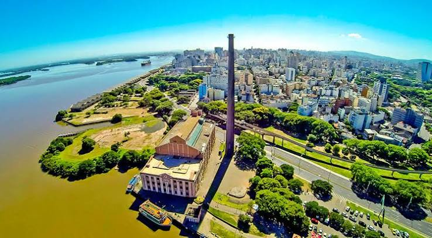

Explorando a Capital dos Gaúchos

Sobre a Cidade
Porto Alegre é a capital do estado do Rio Grande do Sul, conhecida por seu famoso pôr do sol às margens do Lago Guaíba, rica tradição farroupilha, excelente qualidade de vida e hospitalidade única.
Clima
- Temperatura: 9 °C
- Condição: Parcialmente Nublado
- Vento: 14 km/h
- Sensação Térmica: N/A